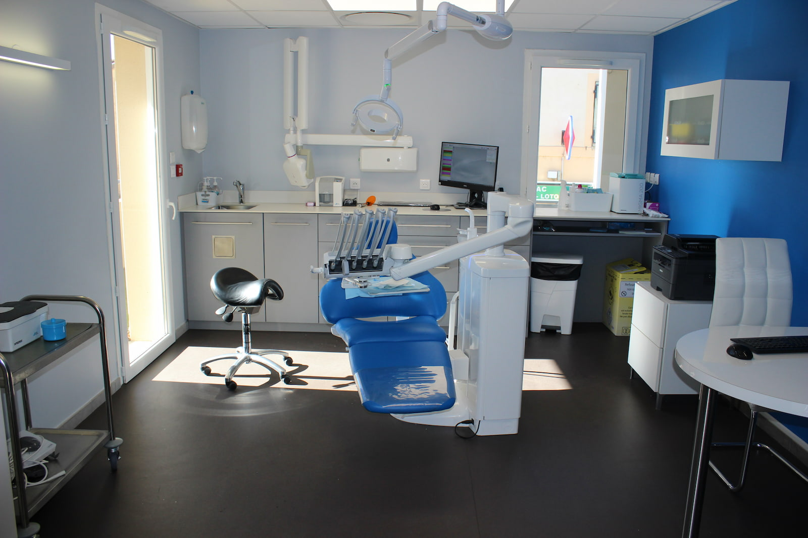
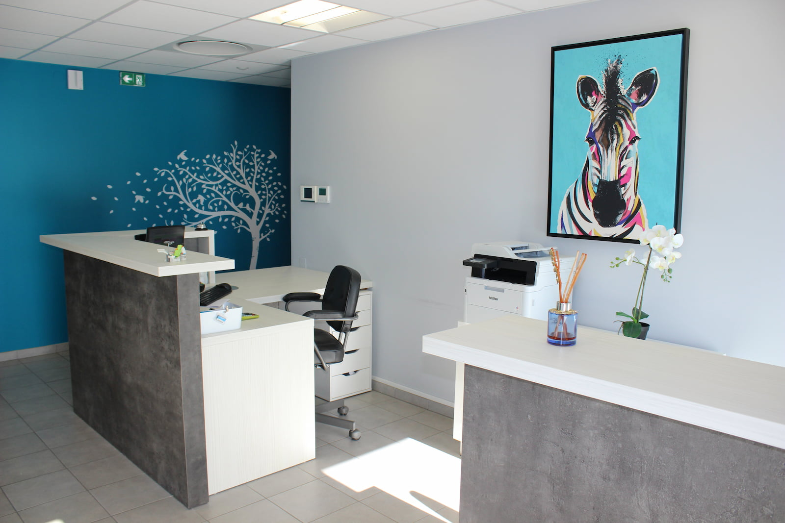
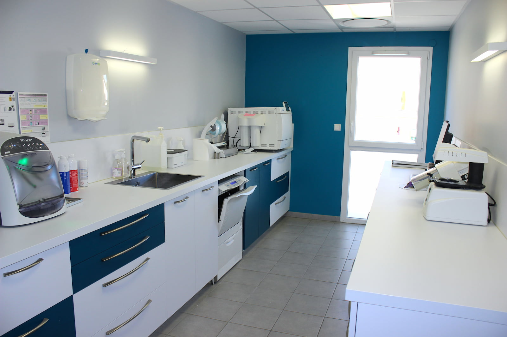
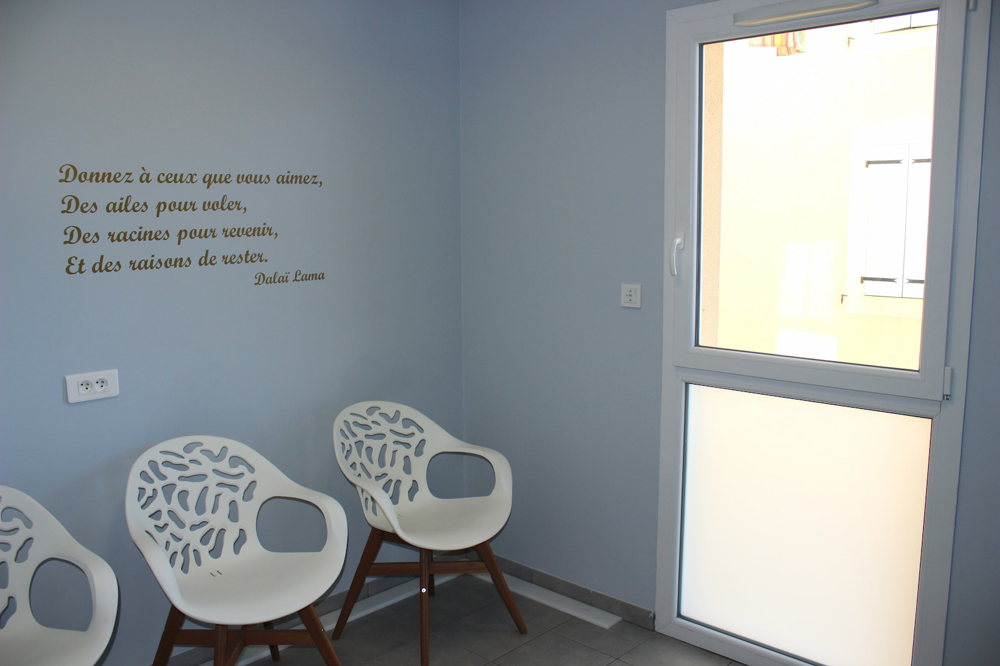
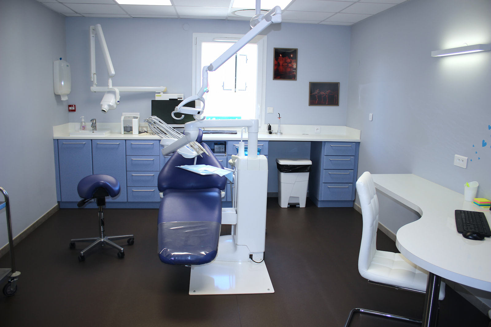

Soins
Soins d'omnipratique: prévention, soins conservateurs, prothèses dentaires.
Prothèses sur implant.
Le Dr Jouquet Laetitia et son assistante Angélique vous accueillent pour des soins d'omnipratique.
Le cabinet est situé au sein de la maison médicale de Clérieux. L'accès se fait par l'arrière du bâtiment.





Soins d'omnipratique: prévention, soins conservateurs, prothèses dentaires.
Prothèses sur implant.
Le Dr Jouquet et son assistante Angélique travaillent en collaboration depuis plus de 20 ans dans la confiance et le respect.
DécouvrirAdresse: 1 place des Remparts 26260 Clerieux, maison médicale de Clérieux
téléphone 04 75 45 06 15.